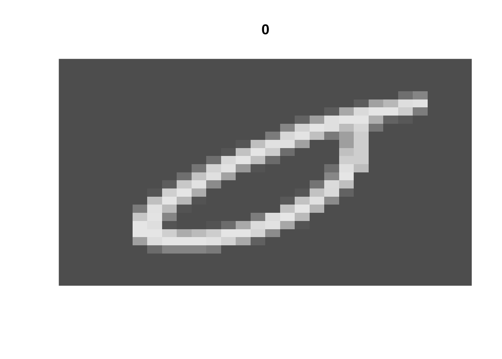
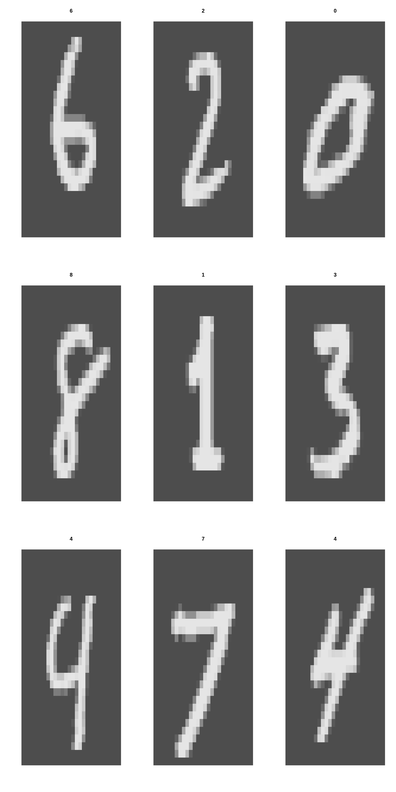

dir <- "~/work/courses/stat380/weeks/week-12/"
# renv::activate(dir)Packages we will require this week
packages <- c(
# Old packages
"ISLR2",
"dplyr",
"tidyr",
"readr",
"purrr",
"repr",
"tidyverse",
"kableExtra",
"IRdisplay",
# NEW
"torch",
"torchvision",
"luz"
)
# renv::install(packages)
sapply(packages, require, character.only=TRUE)Tue, Apr 12
Agenda:
- Real-world neural network classification
- Dataloaders
- Torch for image classification
Titanic
url <- "https://web.stanford.edu/class/archive/cs/cs109/cs109.1166/stuff/titanic.csv"
df <- read_csv(url) %>%
mutate_if(\(x) is.character(x), as.factor) %>%
mutate(y = Survived) %>%
select(-c(Name, Survived)) %>%
(\(x) {
names(x) <- tolower(names(x))
x
})Rows: 887 Columns: 8
── Column specification ────────────────────────────────────────────────────────
Delimiter: ","
chr (2): Name, Sex
dbl (6): Survived, Pclass, Age, Siblings/Spouses Aboard, Parents/Children Ab...
ℹ Use `spec()` to retrieve the full column specification for this data.
ℹ Specify the column types or set `show_col_types = FALSE` to quiet this message.df %>% head# A tibble: 6 × 7
pclass sex age `siblings/spouses aboard` parents/children a…¹ fare y
<dbl> <fct> <dbl> <dbl> <dbl> <dbl> <dbl>
1 3 male 22 1 0 7.25 0
2 1 female 38 1 0 71.3 1
3 3 female 26 0 0 7.92 1
4 1 female 35 1 0 53.1 1
5 3 male 35 0 0 8.05 0
6 3 male 27 0 0 8.46 0
# … with abbreviated variable name ¹`parents/children aboard`Breast Cancer Prediction
# url <- "https://archive.ics.uci.edu/ml/machine-learning-databases/breast-cancer-wisconsin/wdbc.data"
# col_names <- c("id", "diagnosis", paste0("feat", 1:30))
# df <- read_csv(
# url, col_names, col_types = cols()
# ) %>%
# select(-id) %>%
# mutate(y = ifelse(diagnosis == "M", 1, 0)) %>%
# select(-diagnosis)
# df %>% headTrain/Test Split
k <- 5
test_ind <- sample(
1:nrow(df),
floor(nrow(df) / k),
replace=FALSE
)df_train <- df[-test_ind, ]
df_test <- df[test_ind, ]
nrow(df_train) + nrow(df_test) == nrow(df)[1] TRUEBenchmark with Logistic Regression
fit_glm <- glm(
y ~ .,
df_train %>% mutate_at("y", factor),
family = binomial()
)
glm_test <- predict(
fit_glm,
df_test,
output = "response"
)
glm_preds <- ifelse(glm_test > 0.5, 1, 0)
table(glm_preds, df_test$y)
glm_preds 0 1
0 100 31
1 10 36Neural Net Model
NNet <- nn_module(
initialize = function(p, q1, q2, q3) {
self$hidden1 <- nn_linear(p, q1)
self$hidden2 <- nn_linear(q1, q2)
self$hidden3 <- nn_linear(q2, q3)
self$output <- nn_linear(q3, 1)
self$activation <- nn_relu()
self$sigmoid <- nn_sigmoid()
},
forward = function(x) {
x %>%
self$hidden1() %>% self$activation() %>%
self$hidden2() %>% self$activation() %>%
self$hidden3() %>% self$activation() %>%
self$output() %>% self$sigmoid()
}
)Fit using Luz
M <- model.matrix(y ~ 0 + ., data = df_train)fit_nn <- NNet %>%
#
# Setup the model
#
setup(
loss = nn_bce_loss(),
optimizer = optim_adam,
metrics = list(
luz_metric_accuracy()
)
) %>%
#
# Set the hyperparameters
#
set_hparams(p=ncol(M), q1=256, q2=128, q3=64) %>%
set_opt_hparams(lr=0.005) %>%
#
# Fit the model
#
fit(
data = list(
model.matrix(y ~ 0 + ., data = df_train),
df_train %>% select(y) %>% as.matrix
),
valid_data = list(
model.matrix(y ~ 0 + ., data = df_test),
df_test %>% select(y) %>% as.matrix
),
epochs = 50,
verbose = TRUE
)Epoch 1/50
Train metrics: Loss: 0.7124 - Acc: 12.3577
Valid metrics: Loss: 0.63 - Acc: 11.774
Epoch 2/50
Train metrics: Loss: 0.6207 - Acc: 12.3211
Valid metrics: Loss: 0.5873 - Acc: 11.774
Epoch 3/50
Train metrics: Loss: 0.6009 - Acc: 12.3211
Valid metrics: Loss: 0.5755 - Acc: 11.774
Epoch 4/50
Train metrics: Loss: 0.5822 - Acc: 12.3577
Valid metrics: Loss: 0.5377 - Acc: 11.774
Epoch 5/50
Train metrics: Loss: 0.5928 - Acc: 12.2113
Valid metrics: Loss: 0.5722 - Acc: 11.774
Epoch 6/50
Train metrics: Loss: 0.5391 - Acc: 12.3944
Valid metrics: Loss: 0.4866 - Acc: 11.774
Epoch 7/50
Train metrics: Loss: 0.5218 - Acc: 12.3211
Valid metrics: Loss: 0.4795 - Acc: 11.774
Epoch 8/50
Train metrics: Loss: 0.5179 - Acc: 12.2479
Valid metrics: Loss: 0.5312 - Acc: 11.774
Epoch 9/50
Train metrics: Loss: 0.5125 - Acc: 12.3577
Valid metrics: Loss: 0.499 - Acc: 11.774
Epoch 10/50
Train metrics: Loss: 0.4942 - Acc: 12.3577
Valid metrics: Loss: 0.4488 - Acc: 11.774
Epoch 11/50
Train metrics: Loss: 0.449 - Acc: 12.2845
Valid metrics: Loss: 0.4396 - Acc: 11.774
Epoch 12/50
Train metrics: Loss: 0.454 - Acc: 12.3211
Valid metrics: Loss: 0.465 - Acc: 11.774
Epoch 13/50
Train metrics: Loss: 0.4493 - Acc: 12.2479
Valid metrics: Loss: 0.4404 - Acc: 11.774
Epoch 14/50
Train metrics: Loss: 0.4481 - Acc: 12.2845
Valid metrics: Loss: 0.4214 - Acc: 11.774
Epoch 15/50
Train metrics: Loss: 0.4783 - Acc: 12.2479
Valid metrics: Loss: 0.4881 - Acc: 11.774
Epoch 16/50
Train metrics: Loss: 0.431 - Acc: 12.3577
Valid metrics: Loss: 0.4523 - Acc: 11.774
Epoch 17/50
Train metrics: Loss: 0.4208 - Acc: 12.3211
Valid metrics: Loss: 0.4376 - Acc: 11.774
Epoch 18/50
Train metrics: Loss: 0.4163 - Acc: 12.3211
Valid metrics: Loss: 0.4546 - Acc: 11.774
Epoch 19/50
Train metrics: Loss: 0.4277 - Acc: 12.2845
Valid metrics: Loss: 0.4091 - Acc: 11.774
Epoch 20/50
Train metrics: Loss: 0.4243 - Acc: 12.3944
Valid metrics: Loss: 0.4337 - Acc: 11.774
Epoch 21/50
Train metrics: Loss: 0.4352 - Acc: 12.3211
Valid metrics: Loss: 0.442 - Acc: 11.774
Epoch 22/50
Train metrics: Loss: 0.4085 - Acc: 12.3944
Valid metrics: Loss: 0.4069 - Acc: 11.774
Epoch 23/50
Train metrics: Loss: 0.4167 - Acc: 12.2845
Valid metrics: Loss: 0.4123 - Acc: 11.774
Epoch 24/50
Train metrics: Loss: 0.4174 - Acc: 12.3944
Valid metrics: Loss: 0.4344 - Acc: 11.774
Epoch 25/50
Train metrics: Loss: 0.4405 - Acc: 12.3211
Valid metrics: Loss: 0.4224 - Acc: 11.774
Epoch 26/50
Train metrics: Loss: 0.4226 - Acc: 12.3211
Valid metrics: Loss: 0.4656 - Acc: 11.774
Epoch 27/50
Train metrics: Loss: 0.408 - Acc: 12.2479
Valid metrics: Loss: 0.4098 - Acc: 11.774
Epoch 28/50
Train metrics: Loss: 0.3908 - Acc: 12.3577
Valid metrics: Loss: 0.4512 - Acc: 11.774
Epoch 29/50
Train metrics: Loss: 0.486 - Acc: 12.3211
Valid metrics: Loss: 0.4743 - Acc: 11.774
Epoch 30/50
Train metrics: Loss: 0.4701 - Acc: 12.3577
Valid metrics: Loss: 0.4464 - Acc: 11.774
Epoch 31/50
Train metrics: Loss: 0.4317 - Acc: 12.3577
Valid metrics: Loss: 0.402 - Acc: 11.774
Epoch 32/50
Train metrics: Loss: 0.4166 - Acc: 12.2845
Valid metrics: Loss: 0.4609 - Acc: 11.774
Epoch 33/50
Train metrics: Loss: 0.4087 - Acc: 12.3211
Valid metrics: Loss: 0.4152 - Acc: 11.774
Epoch 34/50
Train metrics: Loss: 0.4076 - Acc: 12.2479
Valid metrics: Loss: 0.4122 - Acc: 11.774
Epoch 35/50
Train metrics: Loss: 0.4043 - Acc: 12.3577
Valid metrics: Loss: 0.3982 - Acc: 11.774
Epoch 36/50
Train metrics: Loss: 0.4192 - Acc: 12.3211
Valid metrics: Loss: 0.4049 - Acc: 11.774
Epoch 37/50
Train metrics: Loss: 0.4141 - Acc: 12.2479
Valid metrics: Loss: 0.4272 - Acc: 11.774
Epoch 38/50
Train metrics: Loss: 0.4228 - Acc: 12.3944
Valid metrics: Loss: 0.4186 - Acc: 11.774
Epoch 39/50
Train metrics: Loss: 0.4483 - Acc: 12.3211
Valid metrics: Loss: 0.5525 - Acc: 11.774
Epoch 40/50
Train metrics: Loss: 0.4421 - Acc: 12.2479
Valid metrics: Loss: 0.4258 - Acc: 11.774
Epoch 41/50
Train metrics: Loss: 0.4174 - Acc: 12.2845
Valid metrics: Loss: 0.4088 - Acc: 11.774
Epoch 42/50
Train metrics: Loss: 0.4026 - Acc: 12.2479
Valid metrics: Loss: 0.3992 - Acc: 11.774
Epoch 43/50
Train metrics: Loss: 0.3968 - Acc: 12.3577
Valid metrics: Loss: 0.4439 - Acc: 11.774
Epoch 44/50
Train metrics: Loss: 0.3967 - Acc: 12.3577
Valid metrics: Loss: 0.3966 - Acc: 11.774
Epoch 45/50
Train metrics: Loss: 0.4018 - Acc: 12.2845
Valid metrics: Loss: 0.4192 - Acc: 11.774
Epoch 46/50
Train metrics: Loss: 0.3923 - Acc: 12.2845
Valid metrics: Loss: 0.4323 - Acc: 11.774
Epoch 47/50
Train metrics: Loss: 0.407 - Acc: 12.2113
Valid metrics: Loss: 0.4145 - Acc: 11.774
Epoch 48/50
Train metrics: Loss: 0.38 - Acc: 12.3211
Valid metrics: Loss: 0.4249 - Acc: 11.774
Epoch 49/50
Train metrics: Loss: 0.3889 - Acc: 12.2113
Valid metrics: Loss: 0.4311 - Acc: 11.774
Epoch 50/50
Train metrics: Loss: 0.3903 - Acc: 12.3577
Valid metrics: Loss: 0.4565 - Acc: 11.774plot(fit_nn)nn_test <- predict(
fit_nn,
model.matrix(y ~ . - 1, data = df_test)
)
# nn_test
nn_preds <- ifelse(nn_test > 0.5, 1, 0)
table(nn_preds, df_test$y)
nn_preds 0 1
0 93 18
1 17 49mean(nn_preds == df_test$y)[1] 0.8022599table(glm_preds, df_test$y)
glm_preds 0 1
0 100 31
1 10 36mean(glm_preds == df_test$y)[1] 0.7683616DataLoaders
Dataloaders are a key component in the machine learning pipeline.
They handle loading and preprocessing data in a way that is efficient for training and evaluating models.
Dataloaders make it easy to work with large datasets by loading the data in smaller chunks (called batches) and applying transformations on-the-fly.
Why use Dataloaders?
Efficient memory management: loading data in smaller chunks reduces memory usage.
Parallelism: supports asynchronous data loading for faster processing.
Preprocessing: apply data transformations on-the-fly during training and evaluation.
Flexibility: easily switch between different datasets or preprocessing steps.
Standardization: consistent data format across various machine learning projects.
# ?dataloadertransform <- function(x) x %>%
torch_tensor() %>%
torch_flatten() %>%
torch_div(255)dir <- "./mnist"
train_ds <- mnist_dataset(
root = dir,
train = TRUE,
download = TRUE,
transform = transform
)
test_ds <- mnist_dataset(
root = dir,
train = FALSE,
download = TRUE,
transform = transform
)typeof(train_ds)[1] "environment"length(train_ds)[1] 60000train_ds$data[42000, ,] [,1] [,2] [,3] [,4] [,5] [,6] [,7] [,8] [,9] [,10] [,11] [,12] [,13]
[1,] 0 0 0 0 0 0 0 0 0 0 0 0 0
[2,] 0 0 0 0 0 0 0 0 0 0 0 0 0
[3,] 0 0 0 0 0 0 0 0 0 0 0 0 0
[4,] 0 0 0 0 0 0 0 0 0 0 0 0 0
[5,] 0 0 0 0 0 0 0 0 0 0 0 0 0
[6,] 0 0 0 0 0 0 0 0 0 0 0 0 0
[7,] 0 0 0 0 0 0 0 0 0 0 0 6 37
[8,] 0 0 0 0 0 0 0 0 0 0 125 160 252
[9,] 0 0 0 0 0 0 0 0 1 109 232 252 252
[10,] 0 0 0 0 0 0 0 0 125 252 252 252 252
[11,] 0 0 0 0 0 0 0 0 62 189 211 252 252
[12,] 0 0 0 0 0 0 0 21 206 252 190 252 168
[13,] 0 0 0 0 0 0 73 253 253 253 253 217 0
[14,] 0 0 0 0 0 0 115 252 252 252 148 30 0
[15,] 0 0 0 0 0 0 217 252 252 252 35 0 0
[16,] 0 0 0 0 0 0 217 252 252 252 35 0 0
[17,] 0 0 0 0 0 110 233 253 253 144 0 79 109
[18,] 0 0 0 0 0 253 252 252 252 237 217 242 252
[19,] 0 0 0 0 0 253 252 252 252 252 252 252 252
[20,] 0 0 0 0 0 170 252 252 252 252 252 252 252
[21,] 0 0 0 0 0 0 218 253 253 253 253 253 253
[22,] 0 0 0 0 0 0 72 231 252 252 252 252 252
[23,] 0 0 0 0 0 0 0 52 71 71 71 71 71
[24,] 0 0 0 0 0 0 0 0 0 0 0 0 0
[25,] 0 0 0 0 0 0 0 0 0 0 0 0 0
[26,] 0 0 0 0 0 0 0 0 0 0 0 0 0
[27,] 0 0 0 0 0 0 0 0 0 0 0 0 0
[28,] 0 0 0 0 0 0 0 0 0 0 0 0 0
[,14] [,15] [,16] [,17] [,18] [,19] [,20] [,21] [,22] [,23] [,24] [,25]
[1,] 0 0 0 0 0 0 0 0 0 0 0 0
[2,] 0 0 0 0 0 0 0 0 0 0 0 0
[3,] 0 0 0 0 0 0 0 0 0 0 0 0
[4,] 0 0 0 0 0 0 0 0 0 0 0 0
[5,] 0 0 0 0 0 0 0 0 0 0 0 0
[6,] 0 0 0 0 0 0 0 42 218 134 186 0
[7,] 182 98 51 0 0 0 27 221 253 252 221 16
[8,] 253 252 175 144 0 0 16 190 253 252 252 108
[9,] 253 252 252 252 0 0 0 0 109 252 236 62
[10,] 253 252 200 179 0 0 0 0 109 252 215 42
[11,] 237 91 20 0 0 0 0 21 212 252 241 221
[12,] 62 0 0 0 0 0 21 206 253 252 252 252
[13,] 0 0 0 0 0 32 212 253 255 253 253 108
[14,] 0 0 0 0 0 115 252 252 253 252 220 15
[15,] 0 0 27 120 182 242 252 252 253 252 112 0
[16,] 0 125 221 252 253 252 252 252 253 128 31 0
[17,] 255 253 253 253 255 253 253 253 208 20 0 0
[18,] 253 252 252 252 253 252 252 210 20 0 0 0
[19,] 253 252 252 252 217 215 112 31 0 0 0 0
[20,] 253 252 252 252 0 0 0 0 0 0 0 0
[21,] 255 253 175 62 0 0 0 0 0 0 0 0
[22,] 119 35 10 0 0 0 0 0 0 0 0 0
[23,] 0 0 0 0 0 0 0 0 0 0 0 0
[24,] 0 0 0 0 0 0 0 0 0 0 0 0
[25,] 0 0 0 0 0 0 0 0 0 0 0 0
[26,] 0 0 0 0 0 0 0 0 0 0 0 0
[27,] 0 0 0 0 0 0 0 0 0 0 0 0
[28,] 0 0 0 0 0 0 0 0 0 0 0 0
[,26] [,27] [,28]
[1,] 0 0 0
[2,] 0 0 0
[3,] 0 0 0
[4,] 0 0 0
[5,] 0 0 0
[6,] 0 0 0
[7,] 0 0 0
[8,] 0 0 0
[9,] 0 0 0
[10,] 0 0 0
[11,] 0 0 0
[12,] 0 0 0
[13,] 0 0 0
[14,] 0 0 0
[15,] 0 0 0
[16,] 0 0 0
[17,] 0 0 0
[18,] 0 0 0
[19,] 0 0 0
[20,] 0 0 0
[21,] 0 0 0
[22,] 0 0 0
[23,] 0 0 0
[24,] 0 0 0
[25,] 0 0 0
[26,] 0 0 0
[27,] 0 0 0
[28,] 0 0 0options(repr.plot.width=10, repr.plot.height=10)
i <- sample(1:length(train_ds), 1)
x <- train_ds$data[i, ,] %>% t
image(x[1:28, 28:1], useRaster=TRUE, axes=FALSE, col=gray.colors(1000), main = train_ds$targets[i]-1 )
options(repr.plot.width = 10, repr.plot.height = 10)
par(mfrow=c(3,3))
for(iter in 1:9){
i <- sample(1:length(train_ds), 1)
x <- train_ds$data[i, ,] %>% t
image(x[1:28, 28:1], useRaster = TRUE, axes = FALSE, col = gray.colors(1000), main = train_ds$targets[i]-1)
}
Image Classification
train_dl <- dataloader(train_ds, batch_size = 1024, shuffle = TRUE)
test_dl <- dataloader(test_ds, batch_size = 1024)NNet_10 <- nn_module(
initialize = function(p, q1, q2, q3, o) {
self$hidden1 <- nn_linear(p, q1)
self$hidden2 <- nn_linear(q1, q2)
self$hidden3 <- nn_linear(q2, q3)
self$OUTPUT <- nn_linear(q3, o)
self$activation <- nn_relu()
},
forward = function(x) {
x %>%
self$hidden1() %>%
self$activation() %>%
self$hidden2() %>%
self$activation() %>%
self$hidden3() %>%
self$activation() %>%
self$OUTPUT()
}
)fit_nn <- NNet_10 %>%
#
# Setup the model
#
setup(
loss = nn_cross_entropy_loss(),
optimizer = optim_adam,
metrics = list(
luz_metric_accuracy()
)
) %>%
#
# Set the hyperparameters
#
set_hparams(p=28*28, q1=256, q2=128, q3=64, o=10) %>%
#
# Fit the model
#
fit(
epochs = 10,
data = train_dl,
# valid_data = test_dl,
verbose=TRUE
)Epoch 1/10
Train metrics: Loss: 0.9985 - Acc: 0.7022
Epoch 2/10
Train metrics: Loss: 0.3034 - Acc: 0.912
Epoch 3/10
Train metrics: Loss: 0.2265 - Acc: 0.9341
Epoch 4/10
Train metrics: Loss: 0.1757 - Acc: 0.9488
Epoch 5/10
Train metrics: Loss: 0.143 - Acc: 0.958
Epoch 6/10
Train metrics: Loss: 0.1234 - Acc: 0.963
Epoch 7/10
Train metrics: Loss: 0.1053 - Acc: 0.9686
Epoch 8/10
Train metrics: Loss: 0.0917 - Acc: 0.9728
Epoch 9/10
Train metrics: Loss: 0.0795 - Acc: 0.9764
Epoch 10/10
Train metrics: Loss: 0.0699 - Acc: 0.979NN10_preds <- fit_nn %>%
predict(test_ds) %>%
torch_argmax(dim = 2) %>%
as_array()
Accuracy
mean(NN10_preds == test_ds$targets)[1] 0.973
Confusion matrix
table(NN10_preds, test_ds$targets)
NN10_preds 1 2 3 4 5 6 7 8 9 10
1 972 0 7 0 1 2 8 2 4 8
2 0 1116 1 0 0 0 3 6 0 2
3 0 4 1006 7 8 0 1 14 4 0
4 2 1 4 982 0 4 0 4 5 10
5 0 0 1 0 952 1 3 0 3 9
6 1 1 1 6 0 866 6 0 4 2
7 1 4 2 1 7 8 933 0 3 0
8 1 1 5 4 2 0 0 989 2 6
9 3 8 5 10 1 9 4 5 947 5
10 0 0 0 0 11 2 0 8 2 967caret::confusionMatrix(
NN10_preds %>% as.factor,
test_ds$targets %>% as.factor
)Confusion Matrix and Statistics
Reference
Prediction 1 2 3 4 5 6 7 8 9 10
1 972 0 7 0 1 2 8 2 4 8
2 0 1116 1 0 0 0 3 6 0 2
3 0 4 1006 7 8 0 1 14 4 0
4 2 1 4 982 0 4 0 4 5 10
5 0 0 1 0 952 1 3 0 3 9
6 1 1 1 6 0 866 6 0 4 2
7 1 4 2 1 7 8 933 0 3 0
8 1 1 5 4 2 0 0 989 2 6
9 3 8 5 10 1 9 4 5 947 5
10 0 0 0 0 11 2 0 8 2 967
Overall Statistics
Accuracy : 0.973
95% CI : (0.9696, 0.9761)
No Information Rate : 0.1135
P-Value [Acc > NIR] : < 2.2e-16
Kappa : 0.97
Mcnemar's Test P-Value : NA
Statistics by Class:
Class: 1 Class: 2 Class: 3 Class: 4 Class: 5 Class: 6
Sensitivity 0.9918 0.9833 0.9748 0.9723 0.9695 0.9709
Specificity 0.9965 0.9986 0.9958 0.9967 0.9981 0.9977
Pos Pred Value 0.9681 0.9894 0.9636 0.9704 0.9825 0.9763
Neg Pred Value 0.9991 0.9979 0.9971 0.9969 0.9967 0.9971
Prevalence 0.0980 0.1135 0.1032 0.1010 0.0982 0.0892
Detection Rate 0.0972 0.1116 0.1006 0.0982 0.0952 0.0866
Detection Prevalence 0.1004 0.1128 0.1044 0.1012 0.0969 0.0887
Balanced Accuracy 0.9941 0.9910 0.9853 0.9845 0.9838 0.9843
Class: 7 Class: 8 Class: 9 Class: 10
Sensitivity 0.9739 0.9621 0.9723 0.9584
Specificity 0.9971 0.9977 0.9945 0.9974
Pos Pred Value 0.9729 0.9792 0.9498 0.9768
Neg Pred Value 0.9972 0.9957 0.9970 0.9953
Prevalence 0.0958 0.1028 0.0974 0.1009
Detection Rate 0.0933 0.0989 0.0947 0.0967
Detection Prevalence 0.0959 0.1010 0.0997 0.0990
Balanced Accuracy 0.9855 0.9799 0.9834 0.9779